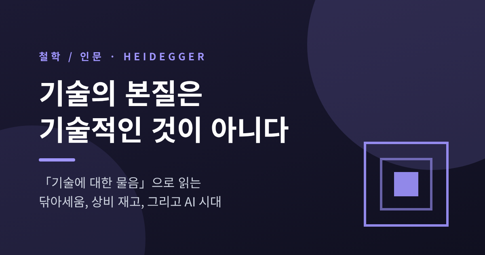
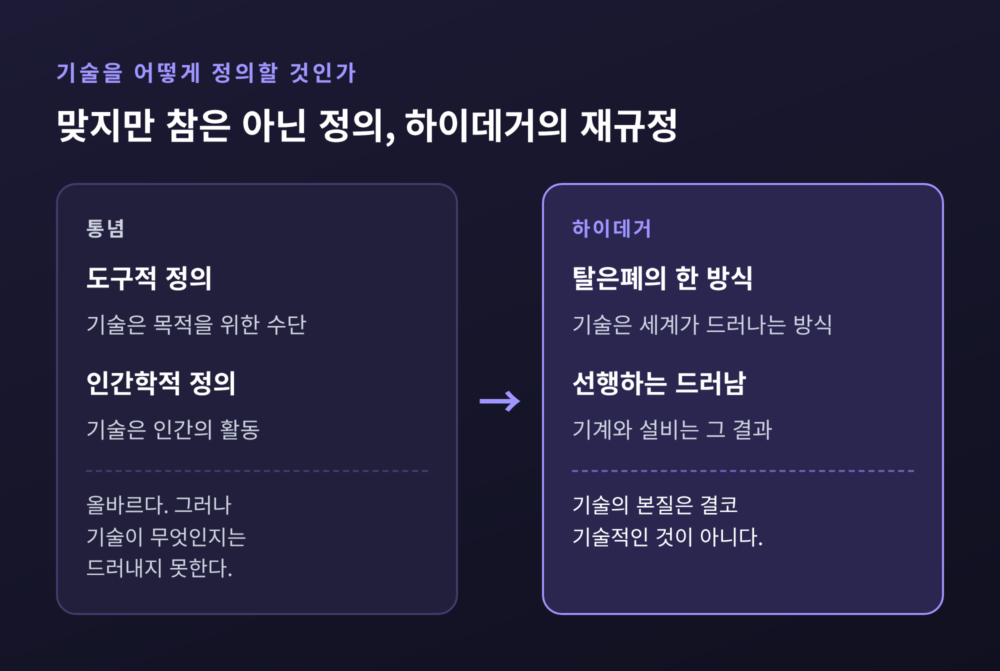
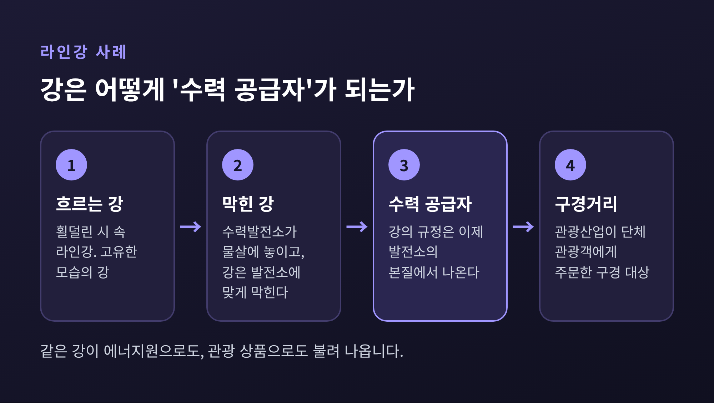

이번 글에서는 하이데거의 「기술에 대한 물음」을 정리해 보겠습니다. 그가 말한 기술의 본질은 기계나 장치가 아니라, 세계를 '쓸 수 있는 자원'으로만 드러내는 방식입니다. 이 방식을 닦아세움(Gestell)이라 부르고, 그렇게 드러난 것들을 상비 재고(Bestand)라 부릅니다. 뒤에서는 이 개념을 알고리즘과 AI에 비추어 보고, 비판받는 지점도 함께 짚겠습니다.
이 글의 출발점은 1949년 12월 브레멘 강연입니다. 「닦아세움(Das Ge-Stell)」이라는 제목의 강연이었고, 이를 고쳐 1954년 『강연과 논문』에 「기술에 대한 물음」으로 실었습니다.
하이데거는 먼저 흔한 답부터 점검합니다. 기술은 목적을 위한 수단이라는 도구적 정의, 기술은 인간의 활동이라는 인간학적 정의입니다. 둘 다 올바릅니다. 다만 그는 올바른 것과 참인 것을 구분합니다. 맞는 말이지만 기술이 무엇인지는 아직 드러내지 못했다는 것입니다.
그래서 나온 문장이 이 글의 핵심입니다. "기술의 본질은 결코 기술적인 것이 아니다." 기술을 아무리 정밀하게 분석해도 본질에는 닿지 못한다는 뜻입니다. 본질은 기계 안이 아니라, 기계가 가능해지기 전에 세계가 우리에게 나타나는 방식에 있기 때문입니다.

하이데거는 기술을 탈은폐(Entbergen), 곧 숨어 있던 것을 드러내는 일로 다시 규정합니다. 고대 그리스어 테크네는 포이에시스(poiesis), 즉 '밖으로 데려옴'에 속했습니다. 장인은 재료가 품은 가능성을 불러내 모습을 갖추게 했습니다.
예전엔 그랬습니다. 지금의 기술은 다릅니다. 하이데거는 현대 기술의 탈은폐를 '도발(Herausfordern)'이라 부릅니다. 자연을 향해 에너지를 내놓으라고 요구하고, 캐내고, 저장하고, 분배하는 방식입니다.
대표 사례가 라인강입니다. 수력발전소는 라인강의 물살에 놓입니다. 하이데거의 표현대로 강이 발전소에 맞게 막혀 버립니다. 그러면 강은 '수력 공급자'가 됩니다. 같은 강이 관광산업이 단체 관광객에게 주문해 둔 '구경거리'가 되기도 합니다. 횔덜린의 시에 나오는 라인강과는 전혀 다른 모습입니다.

이렇게 모든 것을 '쓸 수 있는 상태'로 불러 세우는 틀이 닦아세움입니다. 독일어 stellen(세우다)에 '모음'을 뜻하는 Ge-가 붙은 말입니다. 국내에서는 '닦달', '몰아세움' 등으로 옮겨 왔고, 이 글에서는 닦아세움으로 적습니다.
닦아세움에 불려 나온 것들은 상비 재고가 됩니다. 필요한 순간에 곧바로 꺼내 쓰려고 대기 중인 자원입니다. 활주로에 선 여객기도 마찬가지입니다. 그 자체로 존재하기보다 수송을 위해 대기하는 것으로 나타납니다.
여기서 눈여겨볼 대목이 있습니다. 하이데거는 숲의 벌목량을 재는 산림 관리인을 예로 듭니다. 그는 제지산업의 요구에 맞춰지고, 제지산업은 인쇄산업에, 인쇄산업은 독서 대중에 맞춰집니다. 자원을 부리는 사람도 같은 연쇄에 매여 있다는 이야기입니다. 닦아세움은 인간 역시 상비 재고로 드러낸다고 하이데거는 말합니다.
그가 위험을 두는 곳도 여기입니다. 위협은 치명적인 기계에서 오지 않습니다. 닦아세움이 지배할 때 다른 모든 탈은폐의 가능성이 밀려난다는 점이 최고의 위험입니다. 그렇다고 그가 기술을 버리자고 한 것은 아닙니다. 횔덜린의 시구를 빌려 "위험이 있는 곳에 구원의 힘도 자란다"고 했습니다. 위험을 위험으로 알아보는 일이 구원의 전제라는 뜻으로 읽힙니다.
하이데거는 1976년에 세상을 떠났고, 생성형 AI나 추천 알고리즘을 논한 적이 없습니다. 이 점은 분명히 해 두겠습니다. 가장 가까운 언급은 1966년 슈피겔 대담에서 사이버네틱스가 철학을 대신하리라 예측한 대목입니다. 아래는 모두 후대 연구자들의 해석입니다.
2026년 『Studia Heideggeriana』에 실린 파시쿠(Fasiku)의 논문은 AI가 행동, 감정, 주의, 정체성을 예측하고 수익화할 수 있는 데이터로 바꾼다고 봅니다. 추천 엔진, 감시, 예측 분석이 닦아세움의 논리를 삶 속으로 넓힌다는 것입니다. 이 논문이 짚는 위험은 오작동이 아닙니다. 계산하는 방식이 세계를 만나는 유일한 방식처럼 느껴지는 '조용한 정상화'입니다.
최근 arXiv에 올라온 샤케리(Shakeri)의 개념적 논문은 머신러닝을 직접 다룹니다. 이 논문에 따르면 모델의 '투사'는 경사하강으로 자동 형성되어 불투명하고, 명시적 논증 없이 작동합니다. 기술이 아무리 정교해져도 계산의 우위 자체를 묻지 않으면 닦아세움 안에 머문다는 것입니다. 해법으로는 도구가 어떤 세계관을 실행하는지 알아보는 '존재론적 소양'을 제안합니다.
국내 서평도 비슷한 문제를 의료에 적용합니다. AI 진단과 정밀의학이 퍼질수록 환자가 생체지표와 데이터의 집합으로 줄어들 수 있다는 지적입니다.
그렇다면 하이데거가 권한 태도는 무엇일까요. 1955년 기념 연설을 담은 『Gelassenheit』에서 그는 계산적 사유와 숙고하는 사유를 나눕니다. 그리고 "오늘날 인간은 사유로부터 도피하고 있다"고 말합니다. 파시쿠는 이를 '내려놓음'으로 풀어, 기술을 거부하지도 맹신하지도 않고 허용, 수정, 거부를 가려내는 시험으로 구체화합니다. 다만 규칙 기반 윤리만큼의 절차적 정밀성은 없다고 저자 스스로 인정합니다.
이 이론을 그대로 받아들이기는 어렵습니다. 비판은 크게 두 갈래입니다.
첫째는 철학적 비판입니다. 앤드루 핀버그(Andrew Feenberg)는 하이데거가 현대 기술을 하나의 고정된 본질로 묶었다고 봅니다. 그래서 같은 기술 원리의 서로 다른 구현을 구별하지 못하고, 그의 말로는 "전기와 원자폭탄도 구별하지 못하는" 수준에 이른다고 합니다. 문제가 우리의 태도인지 장치의 설계인지도 모호합니다. 개혁의 기준이 없으니 남는 것은 "오직 신만이 우리를 구할 수 있다"는 운명론이라는 것입니다. 핀버그는 기술을 사회가 바꿀 수 있는 대상으로 보는 구성주의를 대안으로 내세웁니다. AI에 적용하면 이런 질문이 생깁니다. 모델의 학습 데이터와 설계 방식은 얼마든지 달라질 수 있는데, 이를 하나의 닦아세움으로 뭉뚱그려도 될까요.
이견도 있습니다. 드레이퍼스와 스피노사(Dreyfus·Spinosa)는 후기 하이데거를 기술 거부론으로 읽지 않습니다. 가족 식사, 음악, 정원 가꾸기 같은 다양한 '초점 실천'이 구원의 실천이 될 수 있다고 봅니다. 타바크닉(Tabachnick)도 하이데거가 결정론에 빠졌다는 비판에 맞서 그의 응답을 세 갈래로 정리해 옹호합니다.
둘째는 윤리적 비판입니다. 1949년 브레멘 강연 원고에는 농업을 가스실과 절멸수용소에 견주는 문장이 있었습니다. 이 문장은 1953~54년 개고에서 빠졌고, 1994년 전집 79권에서 복원되었습니다. 피터 고든(Peter Gordon)은 이를 생명을 지탱하는 기술과 살해 기술을 같은 것으로 놓은 "도덕적으로 둔감한" 비교라고 평가합니다. 가해의 주체도 지워진다는 것입니다. 이 문장이 은폐되었다고 볼 수는 없다는 반론도 있고, 삭제의 이유는 확인되지 않았습니다. 이 사실은 그의 기술론을 읽을 때 늘 함께 놓아야 합니다.
정리하면 이렇습니다. 하이데거의 질문은 "이 기술이 좋은가 나쁜가"가 아니라 "이 기술을 통해 세계가 어떤 모습으로만 드러나는가"입니다. 이 질문은 AI 시대에도 여전히 쓸모가 있습니다. 반면 그의 답은 모호하고, 구체적 설계와 제도를 논하기에는 너무 높은 곳에 있습니다.
결국 남는 것은 하나입니다. 그는 「기술에 대한 물음」을 이렇게 맺습니다. "묻는 일은 사유의 경건함이다."
오늘 쓰는 알고리즘 앞에서 이 질문을 다시 던져 볼 수 있을까요. 저는 던져 볼 만하다고 생각합니다. 적어도 내가 쓰는 도구가 나를 어떤 모습으로 드러내는지 묻는 동안은, 아직 상비 재고가 아니기 때문입니다.